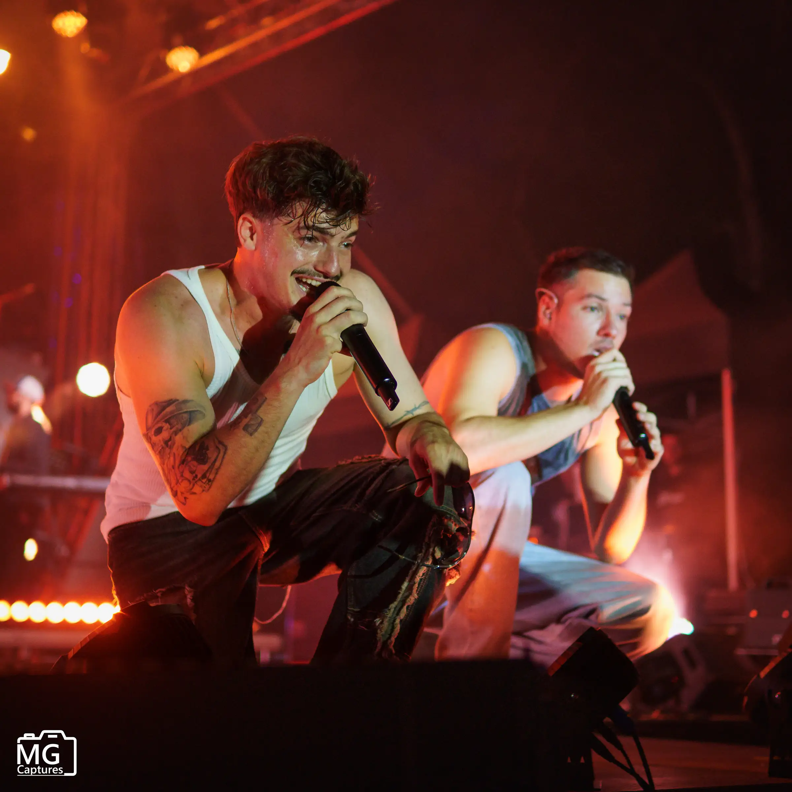
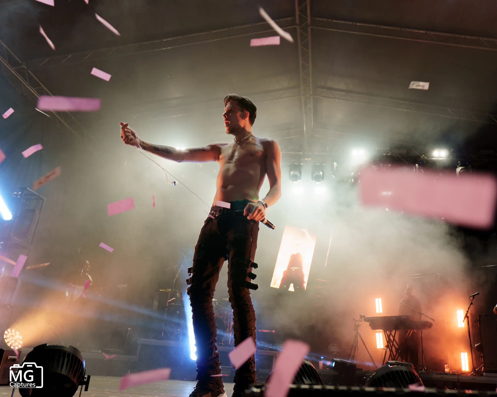
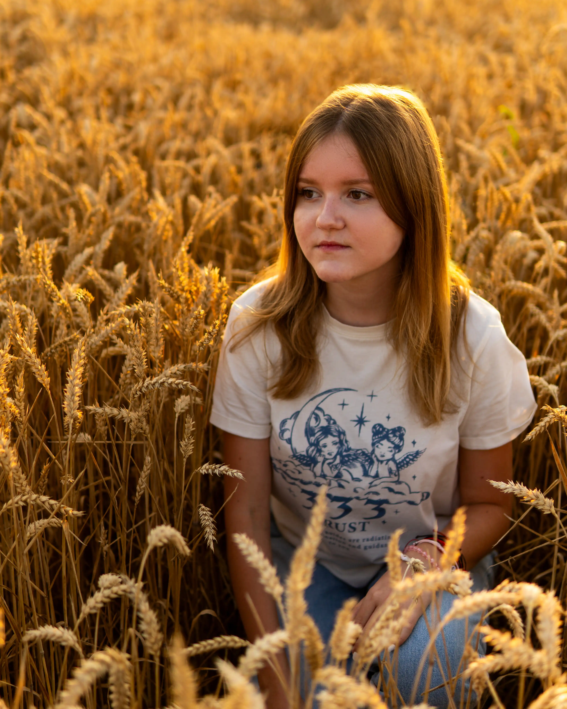
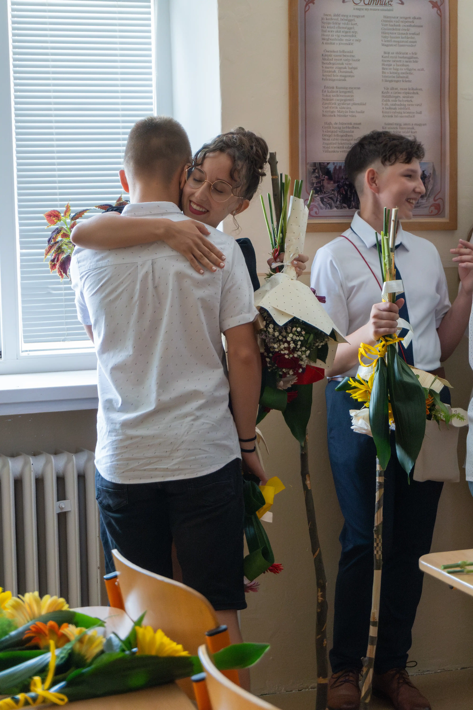

Gabriel Madový
Tech Developer & Photographer
Vitajte! Mojou vášňou je technológia a tvorba. Či už ide o inteligentnú harmóniu hardvéru a softvéru, čistý kód alebo zachytenie neopakovateľného momentu cez objektív. V týchto dvoch odlišných svetoch ma vedie ten istý princíp: vytvárať precízne a kvalitné výsledky.
Spoznajte ma ↓
Zachytené momenty.




Vizuálny štýl
Cez objektív nezachytávam len estetické zábery, ale aj skutočné príbehy. Sústreďujem sa na prirodzené reakcie a neopakovateľné momenty. Mojím cieľom je vytvoriť v uvoľnenej atmosfére vizuálne spomienky, ktoré vám aj po rokoch vrátia tie isté emócie.
Bezpečnosť & Vývoj.
Ako študenta inžinierstva (VUT Brno) a vývojára ma motivuje prienik softvéru, sietí a fyzických systémov. Či už ide o moderné multiplatformové mobilné aplikácie, konfiguráciu komplexných sieťových infraštruktúr alebo integráciu bezpečnostných systémov, mojím cieľom je navrhovať stabilné architektúry, ktoré bezchybne fungujú v reálnom svete.
data class Engineer(
val name: String = "Gabriel Madový",
val focus: String = "InfoSec & App Dev"
) {
fun buildSecureSystem() {
val skills = listOf(
"Android Compose", "Bosch Fire Alarms", "Cisco Networks"
)
println("Connecting Hardware & Software...")
}
// Always learning, always improving...
}Mobile & App Development
Vývoj natívnych Android a Compose Multiplatform aplikácií. Zameranie na moderné, čisté používateľské rozhranie (UI/UX), reaktívne programovanie a optimalizovaný výkon.
Cybersecurity & Networking
Štúdium informačnej bezpečnosti na VUT v Brne. Ako certifikovaný profesionál Cisco (CCST) rozumiem návrhu a ochrane moderných sieťových architektúr a komunikačných protokolov.
Hardware & Security Systems
Spojenie fyzického a digitálneho sveta. Som certifikovaný elektrotechnik (§21) so skúsenosťami s hardvérovou integráciou a komplexnými bezpečnostnými systémami (napr. Bosch EPS).